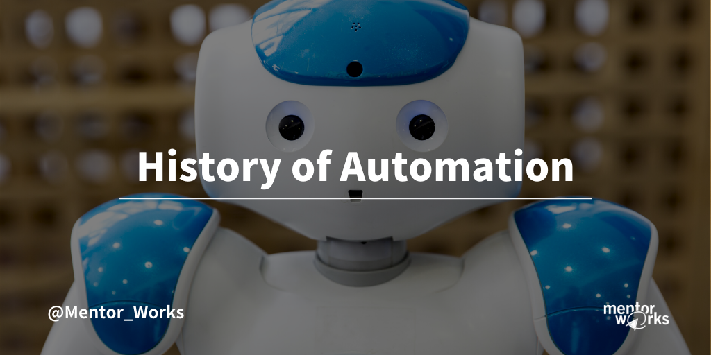

History of Automation
Automation, the application of machines to tasks once operated by human beings or, increasingly, to tasks that would otherwise be difficult. Although the term mechanization is often applied to refer to the simple replacement of individual labor by machines, automation generally means the integration of machines into a self-governing system. Automation has changed those areas in which it has been introduced, and there is hardly an aspect of modern life that has been unaffected by it.
Credit: Google
The term automation was invented in the automobile industry about 1946 to describe the expanded use of automatic devices and controllers in mechanized production lines. The origin of the word is attributed to D.S. Harder, an engineering supervisor at the Ford Motor Company at the time.
The term is used widely in a production context, but it is also applied outside production in connection with a variety of systems in which there is a significant substitution of mechanical, electrical, or computerized action for human effort and intelligence. However, automation can trace its roots back huge further than that. 762 B.C. to be exact(ish).
Industrial automation in manufacturing entails the use of machines to carry out manufacturing methods with levels of speed, flexibility, stamina, and accuracy beyond the capacity of a human worker. The machines can be powered using a multitude of methods including electrical, hydraulic, mechanical, pneumatic, and computer.
The main benefits of manufacturing automation include reduced production expenses, improved quality, and reliability, and decreased waste.
As mention earlier, the automation can be found in Homer's “The Iliad”. At the end of book one, Homer presents the tale of Hephaestus. Hephaestus is the Greek god of blacksmiths, craftsmen, artisans, sculptors, metals, metallurgy, fire and volcanoes. He was tasked with producing all of the weaponry used by the gods of Mount Olympus. To help him in his works he crafted automatons.
Automatons were self-operating machines, or robots, fashioned from metal. They aided Hephaestus in his work and made feasible the production of the magnificent equipment used by gods and mortals alike.
While, of course, the workshop of Hephaestus is unlikely to have existed, it's mention proves that automation is not a fresh idea. Not by a long shot.
Factory productivity suddenly increased due to electricity in the 1920s and by the 1930s the automotive industry was leading the charge in industrial automation. It was during this time that the industry was applying feedback controllers, a very accurate electrical timer, and protective relays.
During the Second World War, there was a great deal of focus placed on promotions in industrial automation – especially in the production of tanks, warships, fighter airplanes.
By the 1980s the idea of “lights-out” manufacturing had captured the thoughts of industrial engineers. The goal became factories automated to such an extent that the manufacturing floor would be void of humans and robots would manage the entire process.
The 60s, 70s, and 80s
Notable humanoids in the 60s included the 1966 therapy chatbot ‘ELIZA’, who had started life as a joke. Then there was the 1968 mobile robot affectionately called ‘Shakey’.
Following this, the history of automation saw something of a subdued time. The 70s and 80s came to be introduced to as the AI winter. Interest in the development of AI dwindled, and people became extra pessimistic about its chances of success. This didn’t mean that AI research was on hold, merely that it moved out of the limelight for a while.
90s AI and automation software
The 1990s was a period for major advances in AI. An artificial intelligence called ‘Deep Blue’ won chess grandmaster Garry Kasparov at chess. NASA deployed its primary autonomous robotics system, Sojourner, on the surface of Mars.
Meanwhile, web crawlers (and other AI-based data extraction programs) became an important part of widespread web use.
The present-day
Business process automation or BPA (recently becoming recognized as robotic process automation or RPA) is becoming more and more refined and effective. In the present day, automation software has become a necessity preferably than a luxury. Its widespread use is optimizing worker time and work, and leading to enormous supply savings.
We experience the miracle of AI daily, be it on Twitter, in emails, in our video games, or elsewhere. We have artificial intelligence assistants on our phones, in our cars, and our homes. Everything this in the youth of the technology, too.
It isn’t perfect. Siri doesn’t always have the solution, Alexa occasionally mishears us. NPCs in video games do stupid (and hilarious) things, and as recently as 2016 we saw the failure that was Microsoft’s Tay.But despite certain shortfalls, AI and automation are extra versatile now than ever previously. And they’re growing and developing by the day.